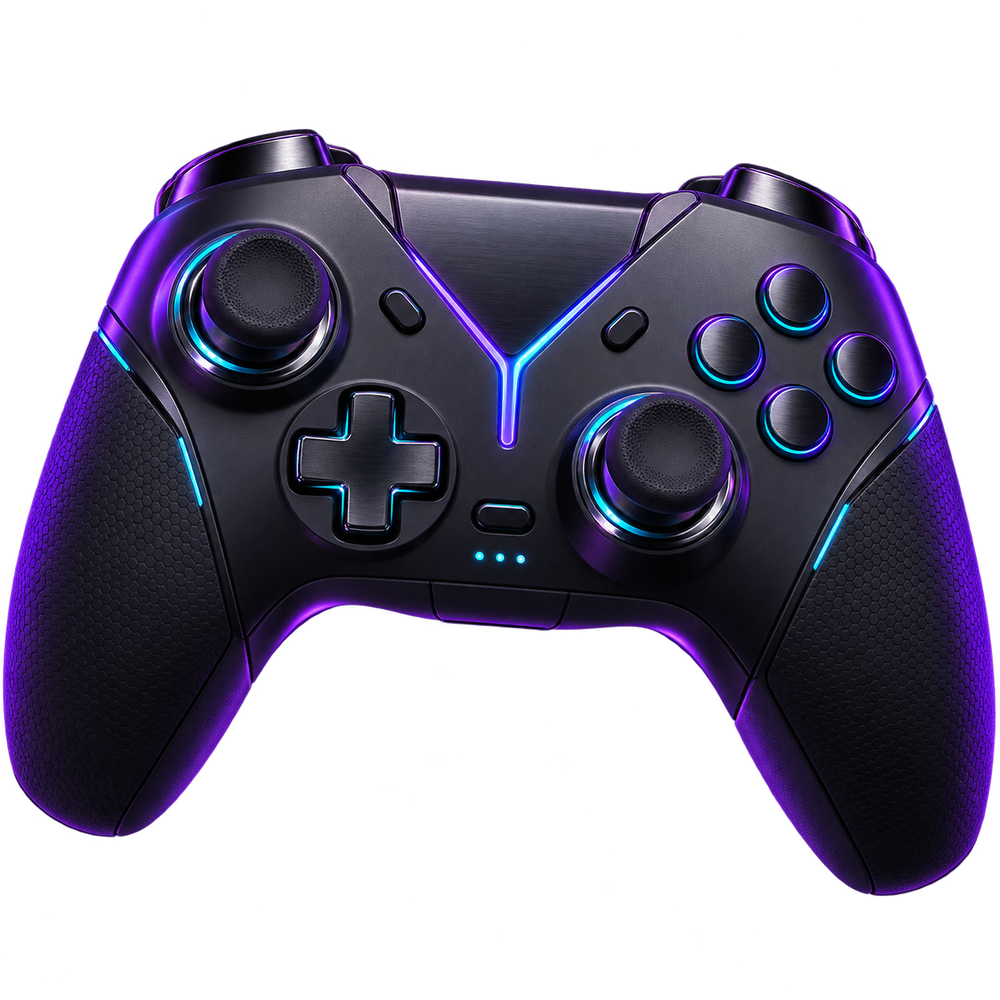

SECURITY EVENT / CONNECTION HIJACKED信号被截断正在重建加密通道REMOTE SESSION // READ ONLYPID 01700:00:00.084 uplink handshake initiated00:00:00.219 tls fingerprint mismatch00:00:00.407 gateway route rewritten00:00:00.731 frame buffer access granted00:00:01.106 identity archive located00:00:01.482 local display control transferredroot@unknown:~$mount /archive/xw --decrypt
XWSUBJECT FOUND / RECORD 017小文来自天津，25 岁。以下个人档案已被未知信号强制公开。GENDER男AGE25LOCATION天津AUTH // BYPASSEDDATA // DECRYPTEDSTREAM // LIVE
INTEREST FILE / 02旅游离开熟悉的坐标，去看不同的城市、风景和生活方式。每一次出发，都会带回新的视角。TYPEOPEN WORLDROUTEUNLIMITEDROUTE_02COORDINATES UNLOCKED
INTEREST FILE / 03游戏喜欢沉浸在新的规则与世界里。挑战、探索和与朋友并肩作战，是我放松与充电的方式。TYPEINTERACTIVE WORLDPLAYERCONNECTEDPLAYER_03SESSION ACTIVE
DECRYPTION COMPLETE个人档案XIAOWENRECORD / 017SUBJECT小文GENDER男AGE25LOCATION天津01 / CAPTURE摄影用镜头收集光线、情绪和生活里不经意的瞬间。VISUAL MEMORY02 / EXPLORE旅游走进陌生的坐标，用新的风景刷新看世界的方式。OPEN WORLD03 / PLAY游戏在虚拟世界里挑战、探索，也享受并肩作战的时刻。SESSION ACTIVE重播介绍 ↻返回主页